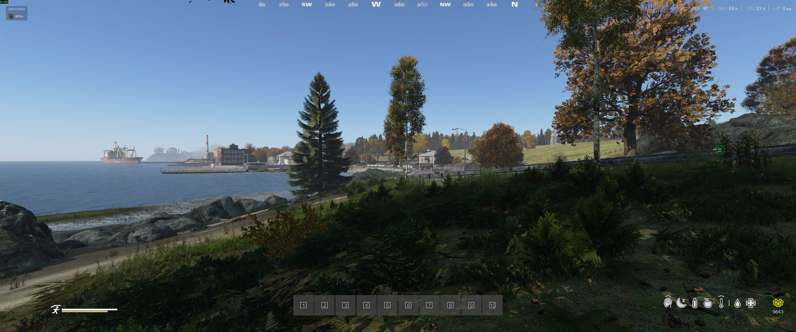
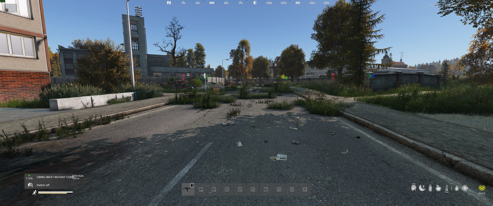
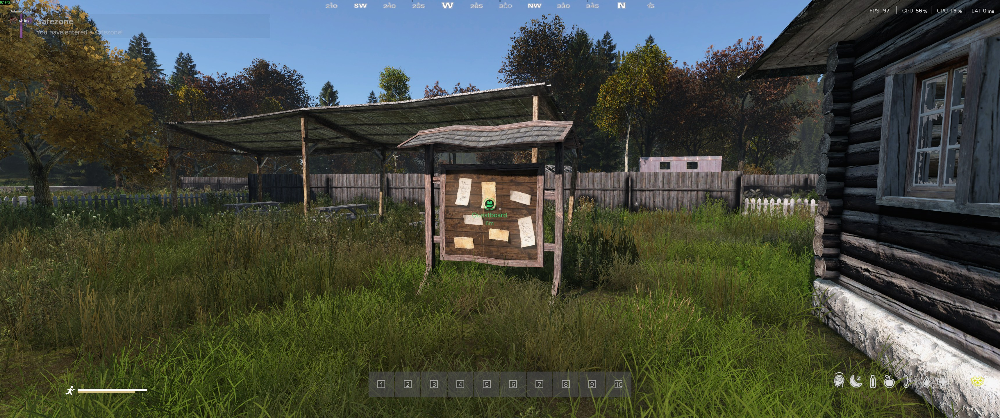

Getting Started¶
Welcome to Survivatorium on DeerIsle. This guide covers everything you need to know for your first steps on the server.
Table of Contents¶
Server Rules¶
General Conduct¶
- 1.1 No insults, discrimination, extremist, or racist statements - immediate ban
- 1.2 Staff decisions are final; appeal via Discord tickets only
- 1.3 No toxic behavior or excessive provocation in chat/voice
- 1.4 No cheats, scripts, or third-party programs - permanent ban
DeerIsle Questing¶
- 2.1 No exit-camping keycard vaults (KMUC, Temple, Crypt) for longer than 15 minutes
- 2.2 No trapping players inside vaults using locks or buildables
- 2.3 Do not block keycard readers with vehicles or items
Base Building¶
- 3.1 No building within 500m of Military areas, Hospitals, or Quest Entrances
- 3.2 Bases must be realistic - no floating/sky bases
- 3.3 Do not block public roads, bridges, or water wells
- 3.4 Maximum 2 bases per faction/group
Combat & Raiding¶
- 4.1 100% KOS map - there are no safezones
- 4.2 No Combat Logging - wait 5 minutes after any engagement before logging out
- 4.3 No Grief Raiding - take what you need, don't destroy bases out of spite
- 4.4 No wall-glitching, emote-peeking, or body-stacking to bypass defenses
Required Mods¶
The server uses a carefully curated modpack to enhance the survival experience. You can find all the required mods in our Steam Workshop collection.
Core Features¶
- Enhanced Core Systems: Expands core mechanics including the quest system, player market, and territory base building.
- Advanced Construction: Build everything from simple wooden shacks to multi-story concrete bunkers.
- Custom Survival Mechanics: Enhanced medical, radiation, and skill systems to deepen the survival experience.
Gameplay Enhancements¶
- KeyRooms & Hacked Crates: High-risk, high-reward loot locations scattered across the map.
- Patrol Helicopters: Dynamic AI threats that patrol the skies.
- Advanced Stamina: A reworked stamina system where your loadout weight and the terrain significantly impact your movement.
- Breaching Charges: Specialized explosives used for raiding enemy bases.
Weapons & Gear¶
- Expanded Arsenal: A large collection of high-quality firearms, attachments, and tactical clothing beyond the base game.
- Realistic Ballistics: Authentic ammunition types and realistic ballistic trajectories.
- Expanded Storage: Visually distinct, high-capacity containers for organizing your base.
Installation¶
- Subscribe to the Survivatorium mod collection on the Steam Workshop.
- Launch DayZ and let the launcher download all required mods.
- Join the server via the server browser or direct connect.
First Spawn¶
When you first wake up on the shores of DeerIsle:
- Orientation Quest - You'll receive an automatic quest directing you to find the main Quest Board.
- Start Screen Flow - You will go through the Server Introduction Screens (rules, name/face, skills, loadout, and map respawn selection).
- Starting Loadout - You can spawn with a starter loadout. Available options include a standard civilian kit, a larger custom loadout option, and conditional loadouts (for example, skill-gated or admin-only).
- Location - Default respawn is DeerIsle random coastal/inland spawn points, with extra options such as sleeping bag or deathpoint respawn when available.
Spawn Areas¶
DeerIsle has multiple spawn points along the coast. Common starting locations include: - Coastal towns - Near the main roads - Close to water sources

The HUD¶
The server features an enhanced HUD to help you monitor your vital stats:

Core Indicators¶
- Health & Blood - Keep an eye on your overall condition.
- White Stamina Bar - Your short-burst vanilla stamina (for sprinting, melee bursts, climbing, and fast movement).
- Yellow Stamina Bar - Your long-term endurance stamina pool, affected by weight, terrain, slope, and heat.
- Hunger & Thirst - Essential survival indicators. Don't let these drop too low!
- Temperature - Monitor your body heat to avoid freezing or overheating.
Specialized Indicators¶
- Radiation Warning - A distinct warning will appear when you enter irradiated zones. Make sure you have the proper protective gear!
- Skill Progress - Notifications will pop up as you level up your various survival skills.
- Mind Icon - Tracks mental state. Low mind can trigger severe penalties and dangerous behavior.
- Sleep Icon - Tracks fatigue from sleep deprivation.
- Reputation (right side) - Your progression currency for unlocking stronger trader access.
Advanced Stamina¶
The stamina system is heavily influenced by your gear: - Weight Matters: Running heavy is still punishing, but your current server settings are tuned to be more forgiving than default values. - Terrain Impact: Running uphill, through tall grass/forest, sand, and especially water drains your yellow stamina much faster than moving on roads.
Your First Steps¶
Step 1: Find Water and Food¶
- Look for water pumps in towns.
- Search residential houses and greenhouses for canned food or fresh produce.
- If you find a knife, you can hunt small animals or chickens for meat.
Step 2: Arm Yourself¶
- Check houses and sheds for basic melee weapons like pipes, bats, or axes.
- You might find a basic civilian firearm, but ammunition will be scarce early on.
- Avoid military areas until you have a reliable weapon and some medical supplies.
Step 3: Locate the Quest Board¶

The Quest Board is your central hub for progression. Here you can: - Accept new quests. - Progress through various storylines. - Earn Hryvnia to spend at the market.
Step 4: Complete the Orientation Quest¶
- Follow the marker to the Quest Board.
- Interact with the board to complete your first quest and claim your reward.
- Pick up your next assignment to continue your journey.
Essential Keybinds¶
| Action | Default Key |
|---|---|
| Inventory | TAB |
| Interact | F |
| Crafting Menu | F9 |
| Voice Chat | CAPSLOCK |
Note: Check your keybindings in the options menu to customize your controls, especially for modded features like the quest log or market interface.
Inventory Management (Quality of Life)¶
To make surviving a little less tedious, the server includes several Quality of Life (QoL) mods to help you manage your gear:
Better Inspect¶
Never guess which magazine fits your gun again! - How it works: Hover over an item in your inventory and press B (default key). - Color Coding: Items of the exact same type will highlight in Orange. Items that are compatible (like the correct ammo or attachments for a weapon) will highlight in Yellow.
Hover Loot¶
Quickly grab loot off the ground or dump unwanted items without dragging and dropping. - Quick Loot: Hover over an item on the ground and hold H to instantly move it to your inventory. - Quick Drop: Hover over an item in your inventory and press SHIFT + H to instantly drop it on the ground. - Quick Store: Hover over an item in your inventory and hold H to move it into the first available storage container on the ground (like a tent or barrel).
Tips for New Players¶
- Trust no one - The map is 100% KOS (Kill on Sight). Always be on your guard.
- Stay hydrated - Clean water is essential. Purify water from ponds or streams if you can't find a well.
- Travel light - Don't hoard every item you find. Manage your weight to maintain your stamina and mobility.
- Learn the map - Knowing the layout of DeerIsle, including key landmarks and military zones, will save your life.
- Use the market - Sell excess loot to traders to earn Hryvnia for the gear you actually need.
- Join a group - Survival is easier with friends. You can form a group and claim a territory together.
Next Steps¶
Ready to learn more? Check out: - Base Building - Establish your foothold - Quests & Traders - Start earning currency - Survival Systems - Master the elements